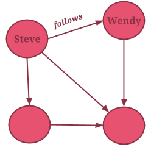
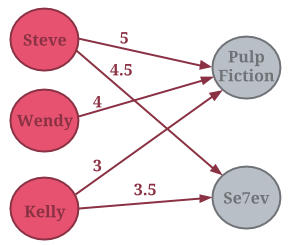
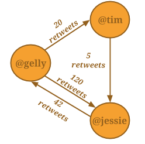
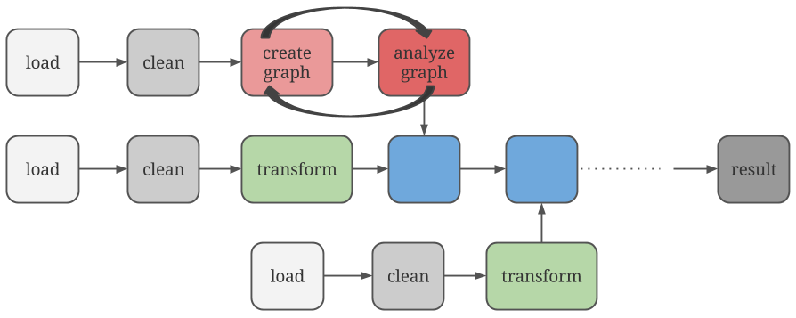

Graphs, also known as Networks, are data structures that capture relationships between entities: connections, interactions, purchases, similarities, geographic proximity, etc. Some examples of such relationshipas could be the following:
We usually draw a Graph using circles for the nodes and arrows connecting these circles to depict the edges. We can attach optional labels on the nodes and edges to show their values:

Weighted graphs lets us capture the strength of the relationship, by associating a value (also referred to as weight) with each edge. These values can refer to similarity, importance, rating, social proximity, distance or other metrics relevant to the data and the application. On the left graph below, the edge value corresponds to the rating that a user has assigned to a movie. On the graph on the right, the edge values tell us how many times a Twitter user has re-tweeted another user.
 
Graphs can be either directed or undirected. In directed graphs, edges (and the relationships that they represent) have a pre-defined direction. We call the node where the edge starts from the source and the node where it ends the target node. The relationships "follows" and "likes" that we saw before define directed edges. Undirected edges have no direction. This usually means that the relationship is present in both directions. For example, "Tom Cruise plays in the same movie as Ken Watanabe" defines an undirected edge (Ken Watanabe also plays in the same movie as Tom Cruise).
By analyzing graphs we can answer many interesting questions!
Gelly is designed to deal with large, distributed graphs. Such graphs are usually generated as intermediate results of long data-analysis pipelines, built with tools like Apache Flink and Hadoop. Gelly is meant to seamlessly integrate with Flink’s DataSet API code to let you easily build long and complex data processing pipelines like the following:

If this is the kind of problems you are dealing with, then you're in the right place! Even though all tutorials here use datasets that are small enough to be processed on a commodity laptop, the same methods and algorithms can be applied to large distributed graphs.
If you are looking to process medium-sized graphs on a single machine, we would suggest you take a look into the following tools:
If you are looking to efficiently process billion-edge graphs on a single machine, then you might want to follow Frank McSherry’s blog.
For the rest of the tutorials you are going to have to do some coding with Gelly! Open your favorite IDE and create a Maven project, adding Gelly as dependency.
You can find more details on how to do this in the Gelly docs.